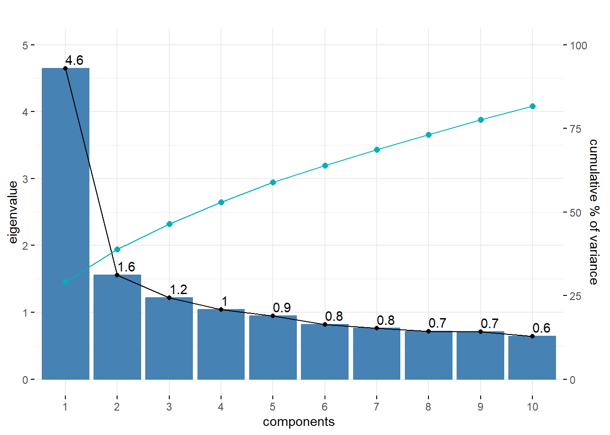

library(psych)
library(tidyverse)
library(corrplot)
library(factoextra)
library(readxl)Estudo de caso
O presente documento tem como objetivo reproduzir e aprimorar análises realizadas no trabalho Reciprocity VS. Commitment in Bank Marketing Strategies como forma de estudo de caso da disciplina de Análise Multivariada do Programa de Pós-Graduação em Administração da Universidade de Brasília (UnB).
Trabalho desenvolvido por Daniel Pagotto (21/0004525) e Andre Bolzon (22/0001197).
Primeiramente, vamos carregar os pacotes necessários para as análises
Em sequência, vamos adicionar a base que será empregada nas análises e vamos inspecionar os dados.
Rows: 413
Columns: 16
$ r1 <dbl> 3, 2, 3, 1, 0, 0, 0, 2, 1, 2, 0, 0, 1, 3, 1, 2, 2, 1, 0, 1, 1, 0, 2…
$ r2 <dbl> 3, 3, 2, 1, 1, 0, 1, 1, 3, 3, 0, 2, 3, 3, 3, 3, 2, 3, 3, 0, 3, 0, 3…
$ r3 <dbl> 0, 1, 2, 1, 0, 0, 0, 0, 2, 2, 0, 3, 2, 3, 3, 1, 0, 1, 1, 0, 2, 1, 3…
$ r4 <dbl> 1, 2, 1, 2, 0, 0, 1, 1, 1, 2, 1, 0, 2, 1, 2, 2, 0, 1, 1, 0, 1, 0, 2…
$ r5 <dbl> 1, 1, 1, 2, 0, 1, 0, 0, 2, 1, 0, 1, 2, 3, 2, 1, 1, 1, 0, 0, 2, 0, 2…
$ r6 <dbl> 2, 3, 2, 1, 1, 0, 2, 2, 2, 1, 0, 1, 1, 3, 2, 2, 1, 1, 1, 2, 1, 0, 2…
$ r7 <dbl> 3, 3, 2, 1, 2, 0, 0, 1, 1, 1, 0, 2, 3, 3, 2, 1, 0, 3, 1, 0, 2, 1, 2…
$ r8 <dbl> 2, 3, 3, 1, 0, 0, 0, 2, 2, 1, 0, 1, 2, 3, 2, 1, 0, 2, 0, 0, 2, 1, 2…
$ c1 <dbl> 3, 3, 2, 2, 2, 2, 2, 3, 3, 1, 1, 0, 2, 2, 2, 2, 2, 2, 0, 3, 1, 2, 2…
$ c2 <dbl> 3, 3, 2, 1, 1, 0, 3, 1, 1, 1, 1, 2, 2, 1, 2, 2, 1, 1, 1, 1, 2, 0, 2…
$ c3 <dbl> 3, 2, 3, 1, 1, 3, 0, 0, 1, 1, 0, 2, 2, 3, 2, 1, 1, 0, 0, 0, 1, 0, 2…
$ c4 <dbl> 3, 3, 2, 2, 0, 2, 3, 3, 2, 3, 2, 0, 1, 2, 3, 3, 3, 2, 1, 0, 1, 1, 2…
$ c5 <dbl> 3, 2, 1, 1, 0, 1, 2, 2, 0, 1, 1, 1, 2, 2, 2, 3, 3, 2, 1, 3, 1, 0, 2…
$ c6 <dbl> 3, 3, 3, 1, 1, 3, 1, 1, 2, 3, 1, 0, 1, 1, 2, 2, 2, 2, 0, 1, 1, 1, 2…
$ c7 <dbl> 2, 3, 2, 1, 2, 1, 3, 3, 1, 3, 1, 0, 3, 3, 2, 3, 0, 1, 1, 2, 1, 2, 2…
$ c8 <dbl> 3, 2, 0, 2, 0, 2, 2, 1, 1, 1, 0, 1, 2, 2, 2, 2, 0, 0, 0, 2, 1, 0, 2…The echo: false option disables the printing of code (only output is displayed).
Vamos verificar uma análise descritiva dos dados. Temos 100% de completude dos dados, com médias variando de 0.93 até 1.93. O uso do presente pacote pode representar uma melhoria em relação ao script original, uma vez que a função skim fornece média, desvio-padrão, percentis e histograma. Incluímos, manualmente, a variância também.
Tal procedimento pode representar uma melhoria em relação ao script original.
descritiva <- skimr::skim(dd)
descritiva2 <- descritiva %>%
mutate(var = numeric.sd**2) %>%
select(skim_variable, n_missing, complete_rate,
numeric.mean, numeric.sd, var, everything())
DT::datatable(descritiva2)No script original, foi construída uma matriz de correlação conforme os códigos abaixo. Testamos outras formas de visualização por meio do pacote GGally, função ggpairs, pois esta permite visualizar os coeficientes de correlação. No entanto, a visualização não ficou satisfatória. Portanto, sugere-se a visualização original.
Sigma <- cor(dd)
corrplot(Sigma, method="color")O gráfico abaixo indica a retenção de dois componentes.
res.pca <- prcomp(dd, scale = TRUE)
scree <- get_eigenvalue(res.pca)
scree eigenvalue variance.percent cumulative.variance.percent
Dim.1 4.6467436 29.042147 29.04215
Dim.2 1.5564229 9.727643 38.76979
Dim.3 1.2187806 7.617379 46.38717
Dim.4 1.0418847 6.511779 52.89895
Dim.5 0.9480910 5.925569 58.82452
Dim.6 0.8182211 5.113882 63.93840
Dim.7 0.7598904 4.749315 68.68771
Dim.8 0.7168857 4.480536 73.16825
Dim.9 0.7077294 4.423309 77.59156
Dim.10 0.6428584 4.017865 81.60942
Dim.11 0.5886578 3.679111 85.28853
Dim.12 0.5741313 3.588321 88.87686
Dim.13 0.4926110 3.078819 91.95567
Dim.14 0.4755628 2.972267 94.92794
Dim.15 0.4228252 2.642657 97.57060
Dim.16 0.3887043 2.429402 100.00000scree.plot <- fviz_eig(res.pca, addlabels=TRUE,choice = "eigenvalue",ylim=c(0,5)) +
labs(title = "", x = "components", y = "eigenvalue")
dim.size <- dim(scree[2])[1]
df <- data.frame(x=1:dim.size,y=cumsum(scree[2])/20)
scree.plot1 <- scree.plot +
geom_point(data=df[1:10,], aes(x, variance.percent), size=2, color="#00AFBB") +
geom_line(data=df[1:10,], aes(x, variance.percent), color="#00AFBB") +
scale_y_continuous(sec.axis = sec_axis(~ . * 20,
name = "cumulative % of variance") )
scree.plot1
O gráfico abaixo representa os dois componentes.
fviz_pca_var(res.pca,repel = TRUE) +
labs(title = "", x = "component 1", y = "component 2")Warning: ggrepel: 2 unlabeled data points (too many overlaps). Consider
increasing max.overlapsOs blocos de código abaixo monstram a composição dos componentes por variável
res.var <- get_pca_var(res.pca)
out.v <- data.frame(res.var$coord[,1:2])
out.v Dim.1 Dim.2
r1 -0.6127962 0.08814676
r2 -0.6417174 0.23890824
r3 -0.6624812 0.33502068
r4 -0.6772167 0.20334982
r5 -0.5838582 0.21190027
r6 -0.6616317 0.19669604
r7 -0.5281015 0.17521913
r8 -0.6395006 0.24681294
c1 -0.3633143 -0.58840678
c2 -0.4730224 -0.31447883
c3 -0.4820895 -0.17801677
c4 -0.3003514 -0.57234584
c5 -0.5272845 -0.06419475
c6 -0.4533627 -0.21211888
c7 -0.4405914 -0.43695815
c8 -0.3733150 -0.34400503De acordo com os valores dos componentes, observa-se que os slogans associados a compromisso possuem maior aceitação.
attach(dd)
c.index <- c1+c2+c3+c4+c5+c6+c7+c8
r.index <- r1+r2+r3+r4+r5+r6+r7+r8
detach(dd)
c.I <- data.frame(index = c.index,rule=rep("commitment",length(c.index)))
r.I <- data.frame(index = r.index,rule=rep("reciprocity",length(c.index)))
figure <- rbind(c.I,r.I)
ggplot(data=figure, aes(x=index, fill=rule)) +
geom_density(binwidth=0.2, alpha=0.5, position="identity") +
labs(title = "", x = "overall index", y = " ") +
scale_fill_grey() Warning in geom_density(binwidth = 0.2, alpha = 0.5, position = "identity"):
Ignoring unknown parameters: `binwidth`